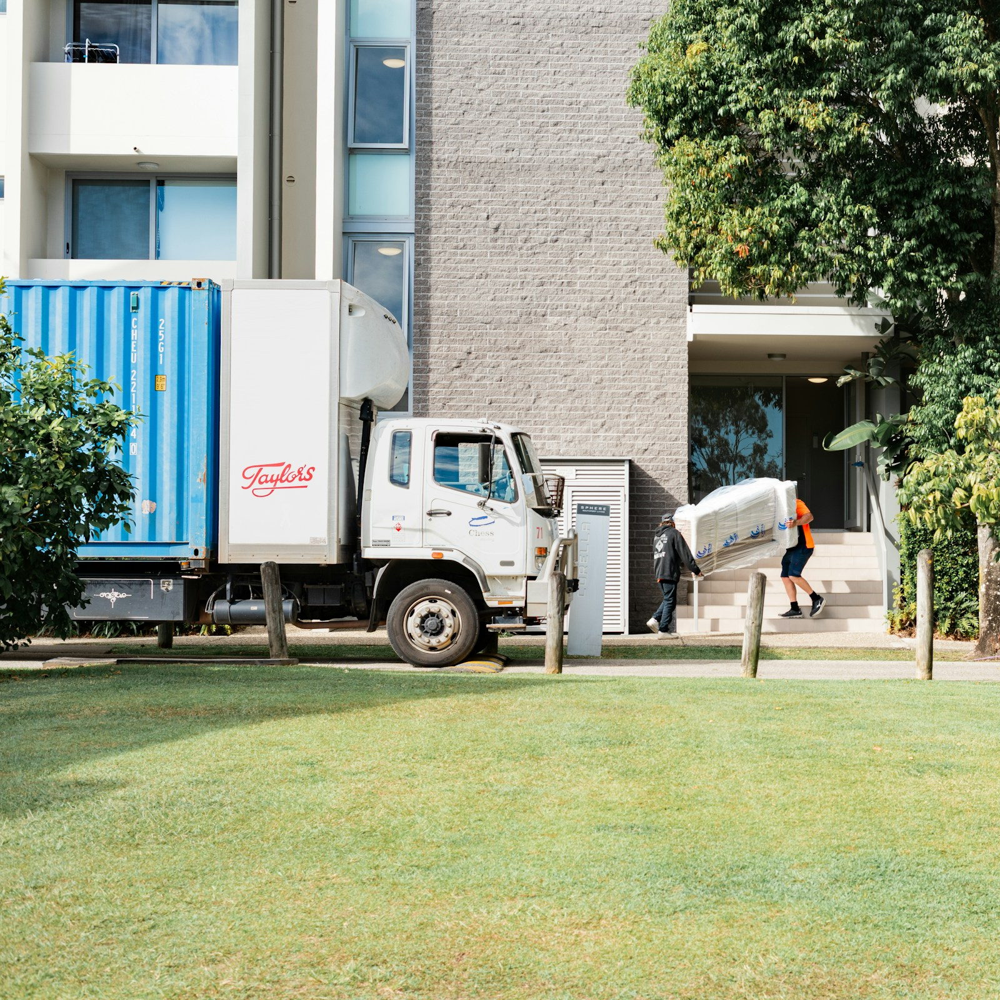

Umzug Herne
Umzüge, Entrümpelungen, Wohnungsauflösungen und Transporte in Herne – mit festem Team, eigenem Transporter und kostenlosem Angebot innerhalb von 24 Stunden.

- 17 kmEntfernung
- ca. 15 Min.Fahrzeit
- in 24 Std.Angebot
- 7 TageErreichbar
Ihr Umzug in Herne.
- Über die A42 schnell erreichbar, ob Herne-Mitte oder Wanne-Eickel.
- Anfahrt und Rückfahrt sind im Tagesplan eingerechnet – der Umzug ist an einem Tag erledigt.
- Wir starten so, dass das Team vor dem Berufsverkehr an der ersten Adresse ist.
- Für eine Halteverbotszone in Herne ist die Straßenverkehrsbehörde der Stadt Herne zuständig – auf Wunsch beantragen wir sie für Sie.
- Wanne-Eickel
- Sodingen
Was wir in Herne übernehmen.
Umzug Herne: kurz beantwortet.
Was kostet ein Umzug in Herne?
Der Preis hängt von Menge, Etage, Aufzug, Tragewegen und Entfernung ab. Wir rechnen jede Position persönlich und senden Ihnen das kostenlose Angebot innerhalb von 24 Stunden.
Wie schnell sind Sie in Herne?
Von unserem Standort in der Karlstraße 32 sind es 17 km, laut Google Maps etwa 15 Minuten Fahrt – im Berufsverkehr länger.
Übernehmen Sie auch Entrümpelungen und Transporte in Herne?
Ja. Neben Umzügen räumen wir Keller, Dachböden und ganze Wohnungen und transportieren einzelne Möbel – in Herne und im ganzen Ruhrgebiet.
Kostenlos anfragen. Antwort in 24 Std.
Umzug, Entrümpelung, Wohnungsauflösung oder Transport: Wir senden Ihr persönliches, unverbindliches Angebot innerhalb von 24 Stunden – per WhatsApp oder E-Mail.